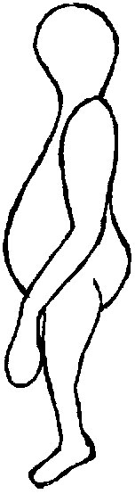

A la ferme Hato Viejo (Vénézuela), Nelson Gutierrez,
un vendeur de nuit, voit un objet sur l'autoroute de Plains, et une créature, dont il prend plusieurs photographies
Lor. III 78, Vallée, Jacques 1969.
À Caracas (Vénézuela), Paula Valdez,
souffrant d'un mal de tête, est soudainement réveillée par un sifflement et voir un petit homme, avec une grande
tête et des yeux proéminents, dire : Je veux que vous veniez avec nous, ainsi, vous connaîtrez d'autres mondes,
et vous réaliserez combien votre monde est petit. Le témoin crie de toutes ses forces, et l'apparition
s'enfuit Lor. III 80, Vallée 1969.
Lun 04
Cynthia Tooth, mère au foyer de Bickley (Kent, Angleterre) est réveillée par un son inhabituel assez comme un
aéroglisseur. Elle se rend à la fenêtre et voit une lumière étrange qui disparaît rapidement derrière des
arbres au nord-ouest Keeling, John : "Invasion 1967", Fortean Times, p. 32.
A Valencia (Vénézuela), l'officier de police P. A. Andrade est en service à l'Hôtel de Ville lorsqu'il entend un son de ronflement et
des pas dans un garage. Il rencontre un nain de 1 m de haut, avec une grosse tête et des yeux luisants,
globuleux et rougeâtres, portant une combinaison couleur argent à l'air métallique. Andrade pointe sa
mitraillette sur la créature, mais une voix venant d'un disque en stationnement dit en espagnol qu'il ne devrait
pas blesser la créature. Le nain tente alors de convaincre Andrade de venir dans leur monde, ajoutant
qu'il est très loin et bien plus grand que la Terre, et avec de nombreux avantages pour les terriens.
Lorsque Andrade refuse, la créature retourne en volant dans l'objet, qui part Lor. III
82 < Vallée 1969.
A Caracas (Venezuela), A. Aguilar
(23 ans), voit une créature par la fenêtre de sa chambre et crie. Ses parents accourent dans la chambre à temps
pour la voir montant par-dessus les toits des maisons, entourée d'une lueur bleuâtre-jaune. Elle se déplace
comme si elle était suspendue d'un ballon. Une forte odeur de "fer fondu" est détectée par tous Lor. III 81 < Vallée 1969.
Profil de l'être observé à la fin du mois

A la Villa Constitucion (Argentine), lors d'un violent
orage, une famille entière voit un grand objet luisant, émanant des rayons de lumière brillants durant 4 h, après
quoi il décolle en quelques secondes. De la matière semblable à de la suie avec une odeur désagréable et des traces
d'herbe applatie sont notées FSR 68, 6 < Vallée
1969.
À La Baleia (Brésil), Fabio J. Diniz
(16 ans) marche près d'un hôpital lorsqu'il voit un appareil en forme de champignon sur un terrain de jeu. Il a une
coupole au sommet, et une porte comme une guillotine qui glisse vert le haut. Le garçon s'enfuit, mais une voix lui
dit en portuguais : Ne t'enfuis pas. Il voit alors 2 hommes de 2 m de haut, habillés de vêtement verts
ajustés à leur corps, qui lui disent de ne pas avoir peur et de revenir le jour suivant. Autrement, nous
prendrons votre famille. Ils ont une peau verdâtre et des yeux ronds très espacés FSR 68, 6 < Vallée 1969.
A Winsted (Connecticut), 2 adolescentes observent un
grand objet luisant, et 3 petites figures d'environ 1,25 m de haut, avec des grosses têtes, courant près d'une
grange. De l'objet vient un bruit semblable à une moissonneuse lorsqu'il démarre, mais ne parvient pas à
démarrer. L'objet blacked out, et les figures sont cachées lorsqu'une voiture passe, après quoi l'objet pulse
entre un blanc très brillant et un rouge mat, et se déplace en diagonale plusieurs fois Lor.
III 166 ; Condon 347 < Vallée 1969.
À Nanton (Canada), l'employé des forêts Russell Hill
entend un son pulsant étrange et voit un objet émettant une lueur verte stationner en l'air près de sa cabane.
Interférences radio Lor. III 34 < Vallée 1969.
Près de Caracas (Vénézuela), un employé de courses
de voiture est attaqué par une créature très forte qui le surprend, mais s'enfuit en courant lorsqu'un cheval est
entendu hennir frénétiquement dans l'étable. 30 mn plus tard, un cheval est attaqué, et un employé voit un nain de 1
m de haut, diminuer comme s'il s'éloignait du bâtiment Lor. III 84 < Vallée 1969.
Fin du mois Entre San Quirze Safaja et San Félu de Codines (Espagne), sur la route
régionale 1413, des témoins en véhicule voient à 120 m un petit personnage haut de 70 cm, de couleur verdâtre
brillant, traversant la route. Sa tête en forme d'œuf est proportionnée à son corps, mais aucun cou n'est visible.
Il a des bras démesurés se terminant par de grosses mains. Il marche doucement puis accélère tout en déviant sa
course obliquement. Son ventre est très développé et les fesses proéminentes. Un jeu de coude et de genou accentué
est remarqué lors du déplacement du petit être. La surface du corps est satinée, brillante de couleur vert néon,
phosphorescente. L'observation dure environ 8 s. Aucun ovni n'est vu LDLN, contact lecteurs n° 4, pp.15-16, novembre 1971.